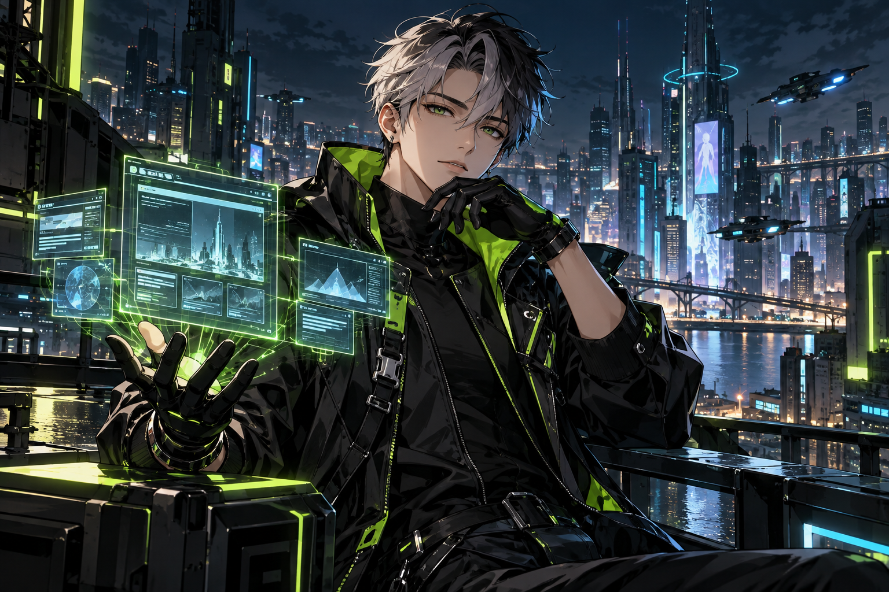
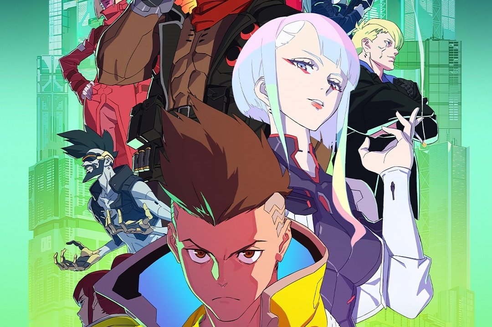
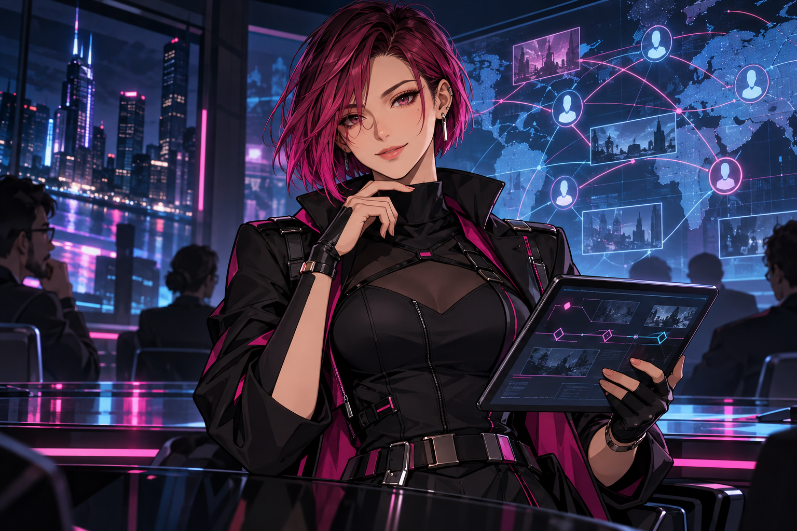
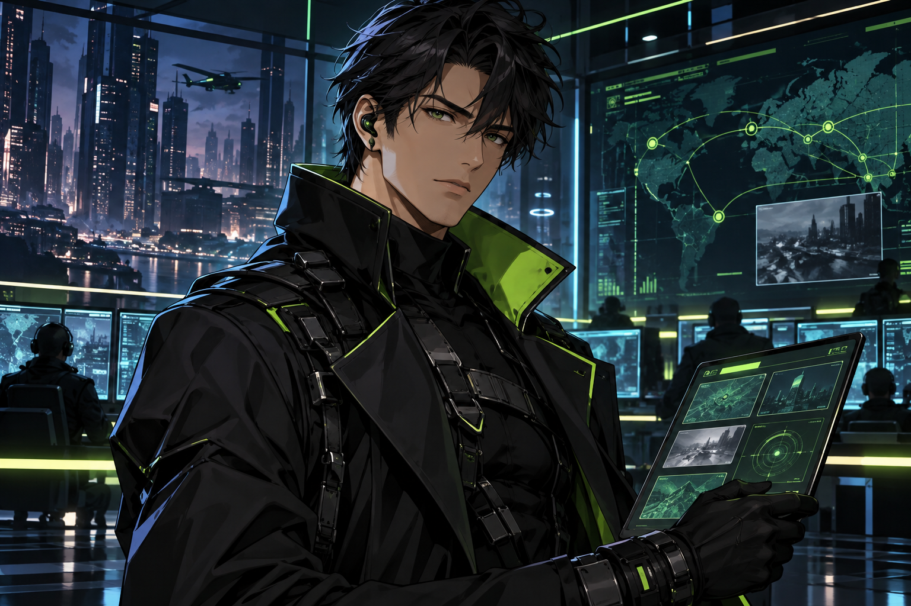
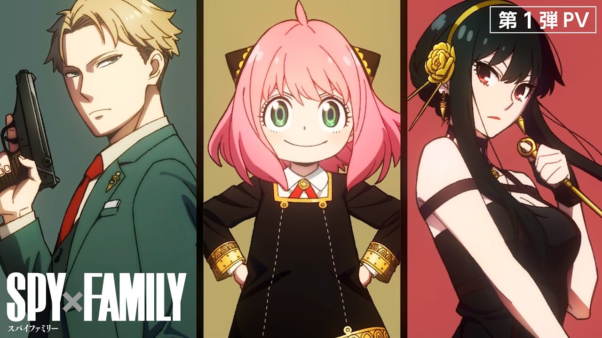

UNIT_01 / CREATIVE TECHSITES & EXPERIÊNCIA01
LUMELanding pages profissionais
Da promessa ao código: une estratégia, redação, design e desenvolvimento para criar páginas responsivas com um objetivo claro.

INTELIGÊNCIA ESPECIALIZADA. DIREÇÃO HUMANA.
Seis agentes de IA. Seis especialidades. Um jeito de transformar suas ideias em páginas, estratégias, análises e próximos passos claros.
01 / CONHEÇA O ESQUADRÃO
Escolha pela entrega que você precisa. Conheça o foco de cada agente e leve um pedido pronto para sua próxima conversa.

UNIT_01 / CREATIVE TECHDa promessa ao código: une estratégia, redação, design e desenvolvimento para criar páginas responsivas com um objetivo claro.

UNIT_02 / HUMAN INSIGHTConecta compreensão do público, Design Thinking, campanhas e cronogramas. Transforma objetivos em propostas testáveis e planos de trabalho.
Organiza documentos, extrai informações com referências e aponta inconsistências, lacunas e possíveis riscos no contexto da avaliação institucional.
Questiona ideias, simplifica experiências e ajuda a definir produto, pitch e próxima entrega. Uma persona de IA inspirada em critérios de produto de Steve Jobs.
Estrutura propostas de valor, experimentos e mecanismos de acompanhamento. Uma persona de IA inspirada no raciocínio de gestão de Jeff Bezos.

Resume suas O.S., organiza status e prazos e separa suas pendências das que dependem de terceiros. Prepara reportes objetivos para acompanhar o trabalho.

02 / DO CONTEXTO À ENTREGA
Uma ideia de produto, uma página, uma campanha, documentos ou ordens de serviço.
Informe seu objetivo, materiais disponíveis e restrições. O agente trabalha a partir do que você fornece.
Receba uma proposta, análise ou plano. Confira a entrega e refine com suas decisões.
03 / SUA PRÓXIMA MISSÃO
Escolha um desafio para encontrar um ponto de partida.
ANTES DE COMEÇAR
Escolha um agente e copie o pedido inicial. Na sua ferramenta de IA, forneça também as instruções do agente e seus materiais. O pedido ajuda a iniciar a conversa; o comportamento depende das instruções e das ferramentas disponíveis.
Você pode usar a proposta de um agente como contexto para outro: definir o produto com Jobs, testar a estratégia com Bezos, planejar com Lucila e criar a página com Lume. Essa troca de contexto é feita por você.
São personas de IA inspiradas em critérios de produto e gestão descritos em suas notas. Não são Steve Jobs ou Jeff Bezos, nem representam suas empresas.
Forneça apenas o necessário para a tarefa, com acesso autorizado. Joyce oferece apoio informativo e minutas para revisão; decisões jurídicas precisam da validação do profissional responsável. O Agente X acompanha os registros fornecidos, conforme as integrações disponíveis.